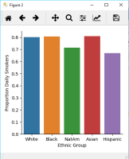
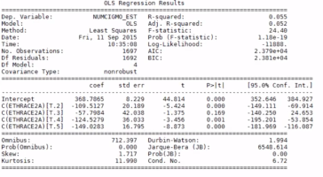

Module Structure
module-structure
Python, Anaconda, Data Exploration
Tools and languages
Exploratory Data analysis
Continuous assessment
Lab-01
Data Management
Data-management
Data Management II
Lab-02
Lab-03
Visualisation of Data
Data Visualisation using Python Libraries
Seaborn library
Seaborn cheatsheet
Lab-04
Lab-05
Testing your hypothesis
Hypothesis Testing
Lab-06
Lab-07
Machine Learning
Regression-modeling
Lab-08
Business Analytics II
Module Structure
Python, Anaconda, Data Exploration
Data Management
Visualisation of Data

Testing your hypothesis

Machine Learning